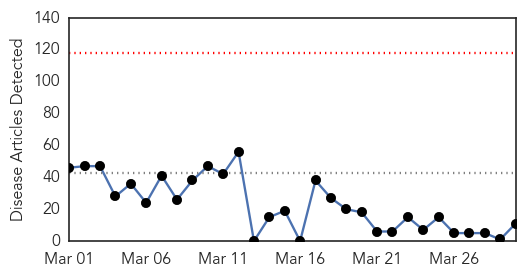

Swine Flu
30-Day Web Trend
0 alerts, 0 warnings

30-Day Twitter Trend
0 alerts, 0 warnings

Article Locations

Article Confidences

Top Articles:
- 1.000
- Battling a pandemic
- 0.994
- Flu cases exceed record highs in Delaware
- 0.993
- 76 swine flu deaths in Telangana since January
- 0.991
- Swine flu cases in state rise to 41
- 0.956
- India, U.S. researchers clash over swine flu strain mutation
- 0.916
- MP: Class 10 student develops app to help swine flu, dengue patients
- 0.912
- Two senior citizens and one child dies from swine flu in Mumbai
- 0.879
- Indian Swine-Flu Virus Reveals Dangerous, New Mutation
- 0.690
- Awareness programmes on H1N1
- 0.638
- Uttar Pradesh Bird Flu Alert Shifts to Agra
- 0.567
- Today's stories from newspapers in Ottawa
Top Tweets:
-
No tweets found for Mar 30, 2015
Measles
30-Day Web Trend
0 alerts, 0 warnings

30-Day Twitter Trend
4 alerts, 0 warnings

Article Locations

Article Confidences

Top Articles:
- 0.911
- Vail Daily health feature: Measles outbreak raises concern, awareness
- 0.841
- Dana Hills High School
- 0.796
- Cambodia 'measles free', WHO reports
- 0.784
- Oklahoma City-County Health Department offers MMR vaccines
- 0.761
- Cambodia ‘measles free’, WHO reports, National, Phnom Penh Post
- 0.703
- Theme Week: Infectious Disease, Contagion and the History of Vaccines
- 0.649
- The Disneyland Measles Outbreak is (Still) Over
Top Tweets:
- 0.724
- Broad measles vaccination coverage & rapid public health response are critical for preventing and controlling measles cases and outbreaks.